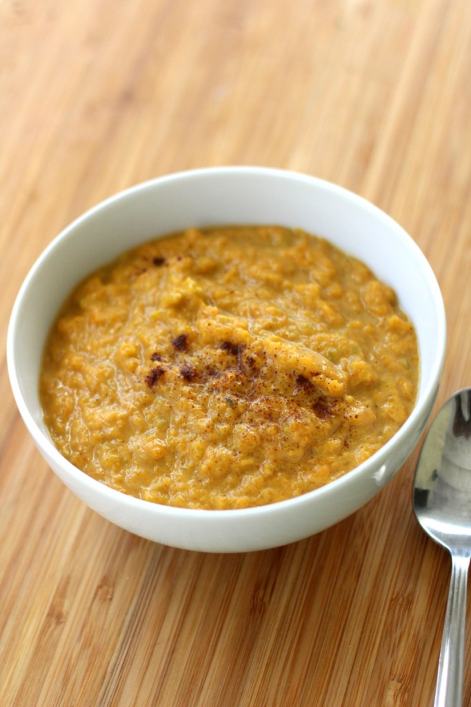

Nhopi Recipes
Back to Main page

Ingredients
- 1 pound butternut squash / pumpkin cubed
- 1 tablespoon peanut butter
- 1/4 teaspoon salt
- 1/4 teaspoon cinnamon
- 1/4 teaspoon ginger
Recipe Instructions
- Bring to boil the squash or pumpkin in a cup of water until it becomes fork tender.
- Do not throw away the water, add the peanut butter, salt, ginger and cinnamon. Reduce heat to low and cover the saucepan for about 3 minutes to allow the peanut butter to be cooked.
- Mash the the squash or pumpkin to a smooth consistency. I like to use the traditional whisk for this stage,
- Simmer for about five more minutes and serve hot.
Back to Main page